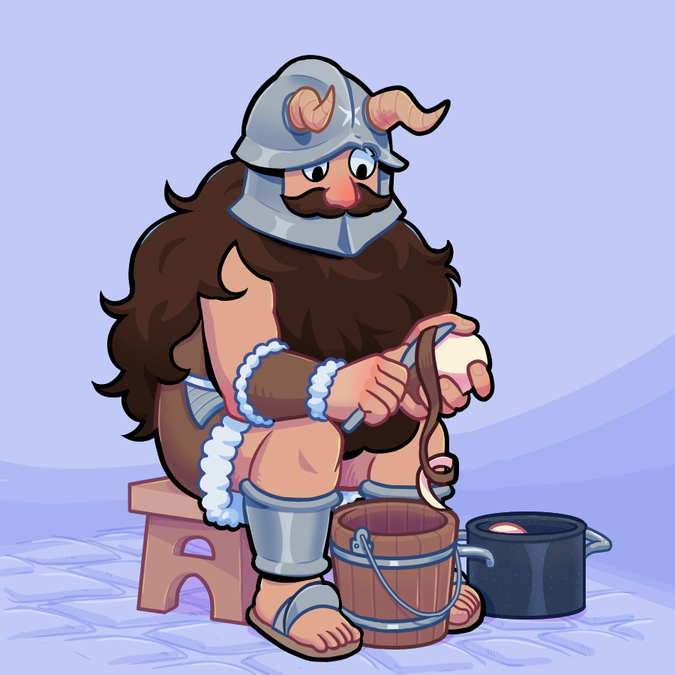

This is an image of Senshi peeling potatoes!
What is he going to cook? A broth, a gratin?
Here is some info about Senshi:
- He was part of a group of outcast dwarves
- They stumbled into a dungeon and got killed by a Hypogriff
- Senshi was the only survivor and thought he had cannibalized his friend
- Naah turns out he had eaten some Hypogriff, not a Griffin
- He started wandering the dungeon and cooking monsters
- He met Laios' party on the first floor
- He showed Laios the "pleasures" of monster food
- He got killed by rabbits once
- He's got a pot that also acts as a shield
- He underlines the importance of three things to live a better longer life:
- Getting enough sleep
- Eating three meals a day
- Keeping a balanced diet - He is THE husbando
- He is a cutie patootie